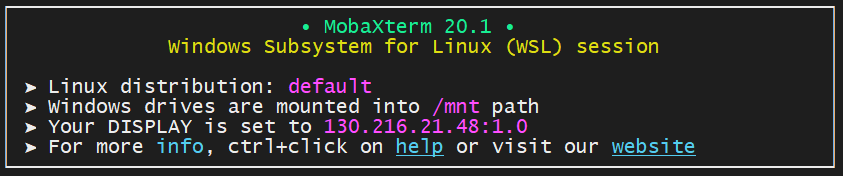

Port Forwarding
Prerequisite
- Have your connection to the NeSI cluster configured.
Some applications only accept connections from internal ports (i.e a port on the same local network), if you are running one such application on the cluster and want to connect to it you will need to set up port forwarding.
Three values must be known, the local port, the host alias, and the remote port. Chosen port numbers should be between 1024 and 49151 and not be in use by another process.
Localhost: The self address of a host (computer), equivalent
to 127.0.0.1. The alias localhost can also be used in most cases.
Local Port: The port number you will use on your local machine.
Host Alias: An alias for the socket of your main connection to the
cluster, mahuika or maui if you have set up your ssh config file as
described
here.
Remote Port: The port number you will use on the remote machine (in this case the NeSI cluster)
Note
The following examples use aliases as set up in standard terminal setup. This allows the forwarding from your local machine to the NeSI cluster, without having to re-tunnel through the lander node.
Command line (OpenSSH)¶
Works for any Linux terminal, Mac terminal, or Windows with WSL enabled.
The command for forwarding a port is
ssh -L <local_port>:<destination_host>:<remote_port> <ssh_host>
Example¶
A client program on my local machine uses the port 5555 to communicate. I want to connect to a server running on mahuika that is listening on port 6666. In a new terminal on my local machine I enter the command:
ssh -L 5555:localhost:6666 mahuika
Your terminal will now function like a normal connection to mahuika. However if you close this terminal session the port forwarding will end.
If there is no existing session on mahuika, you will be prompted for your first and second factor, same as during the regular log in procedure.
Note
Your local port and remote port do not have to be different numbers. It is generally easier to use the same number for both.
SSH Config (OpenSSH)¶
If you are using port forwarding on a regular basis, and don't want the hassle of opening a new tunnel every time, you can include a port forwarding line in your ssh config file ~/.ssh/config on your local machine.
Under the alias for the cluster you want to connect to add the following lines.
LocalForward <local_port> <host_alias>:<remote_port>
ExitOnForwardFailure yes
ExitOnForwardFailure is optional, but it is useful to kill the session if the port fails.
For example:
Host mahuika
User cwal219
Hostname login.mahuika.nesi.org.nz
ProxyCommand ssh -W %h:%p lander
ForwardX11 yes
ForwardX11Trusted yes
ServerAliveInterval 300
ServerAliveCountMax 2
LocalForward 6676 mahuika:6676
ExitOnForwardFailure yes
In the above example, the local and remote ports are the same. This isn't a requirement, but it makes things easier to remember.
Now so long as you have a connection to the cluster, your chosen port will be forwarded.
Note
- If you get a error message
try to create the following directory:
bind: No such file or directory unix_listener: cannot bind to path:mkdir -P ~/.ssh/sockets
MobaXterm¶
If you have Windows Subsystem for Linux installed, you can use the method described above. This is the recommended method.
You can tell if MobaXterm is using WSL as it will appear in the banner when starting a new terminal session.

You can also set up port forwarding using the MobaXterm tunnelling interface.

You will need to create two tunnels. One from lander to mahuika. And another from mahuika to itself. (This is what using an alias in the first two examples allows us to avoid).
The two tunnels should look like this.

■ local port
■ remote port
■ must match
■ doesn't matter
sshuttle¶
sshuttle is a transparent
proxy implementing VPN like traffic forwarding. It is based on Linux or
MacOS platforms (unfortunately Windows is not supported). sshuttle
allows users to create a VPN connection from a local machine to any
remote server that they can connect to via ssh.There is no need to
create a separate tunnel for every port to be forwarded, the package
routes all traffic, going to the specified subnet, through the tunnel.
The command line for sshuttle has the following form:
sshuttle [-l [ip:]port] -r <host_alias>[:port] <subnets...>
More information about specific keys and modifiers for sshuttle commands is available in the online documentation.
As an example, this is how to establish a tunnel through Mahuika login
node over to a specific virtual machine with IP address 192.168.90.5:
sshuttle -r mahuika 192.168.0.0/16
which uses remote SSH host Mahuika to forward all traffic coming to
192.16.XXX.XXX subnet through the port forwarder.
Forwarding to Compute Nodes¶
Ports can also be forwarded from the login node to a compute node.
The best way to do this is by creating a reverse tunnel from your slurm job (that way the tunnel doesn't depend on a separate shell, and the tunnel will not outlive the job).
The syntax for opening a reverse tunnel is similar the regular tunnel
command, -N to not execute a command after connecting, -f to run the
connection in the background and -R for a reverse tunnel ( as opposed
to -L ).
ssh -Nf -R <remote_port>:localhost:<local_port> ${SLURM_SUBMIT_HOST}
An example Slurm script:
#!/bin/bash
#SBATCH --time 00:15:00
#SBATCH --mem 1G
ssh -Nf -R 6676:localhost:6676 ${SLURM_SUBMIT_HOST}
<some process using port 6676>
What Next?
- Using JupyterLab on the cluster.
- NiceDCV
- Paraview